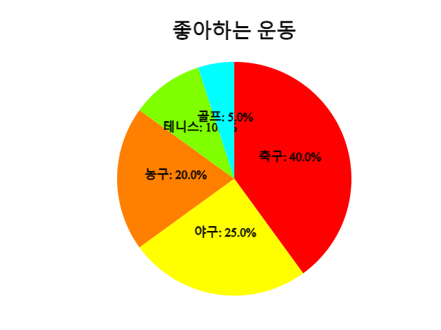
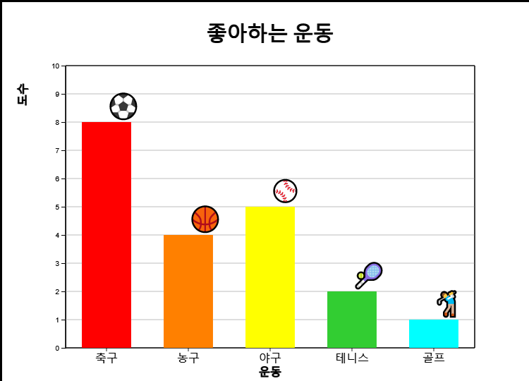
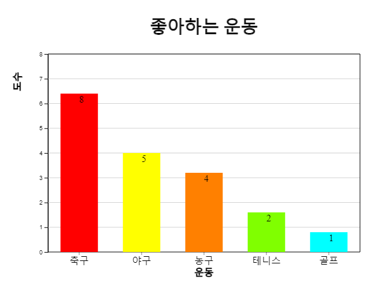
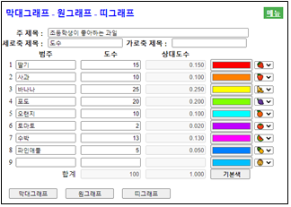
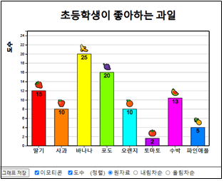
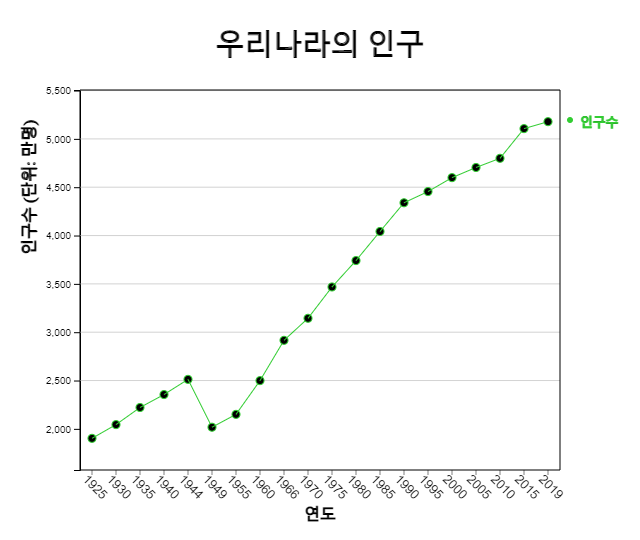
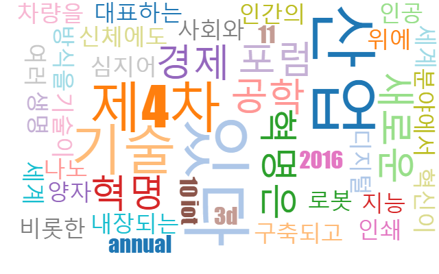

⭐ 생각열기
초등학교 한 학급 학생 20명을 대상으로 좋아하는 운동을 조사한 도수분포표가 다음과 같다.
[표 2.1] 좋아하는 운동의 도수분포표
| 운동 | 학생수 |
|---|---|
| 축구 | 8 |
| 농구 | 4 |
| 야구 | 5 |
| 테니스 | 2 |
| 골프 | 1 |
[2장 pdf]
- 범주형 자료인 경우에 막대그래프, 원그래프, 띠그래프를 그려 분석한다.
- 시간에 따라 측정된 자료는 꺽은선그래프를 그려 분석한다.
- 단어로 이루어진 문자 형태의 자료는 단어구름을 그려 분석한다.
| 운동 | 학생수 |
|---|---|
| 축구 | 8 |
| 농구 | 4 |
| 야구 | 5 |
| 테니스 | 2 |
| 골프 | 1 |
학생들에게 좋아하는 운동을 물으면 '축구', '농구', '야구', ... 등의 대답을 얻을 수 있는데 이를 질적 자료라 한다. 대개의 질적 자료는 그 값이 범주를 의미하여 범주형 자료로 부르기도 한다. 질적 자료는 [표 2.1]과 같이 좋아하는 운동의 학생수를 세어 도수분포표로 만든 후 막대그래프, 원그래프, 띠그래프 등을 이용하여 그 특징을 살펴본다.
막대그래프는 각 범주별 자료의 도수를 직사각형 막대의 높이로 나타낸 것이다. 범주형 자료라는 것을 강조하기 위하여 막대사이의 간격을 띄어 놓는다.

원그래프는 각 범주의 도수가 전체 자료에서 차지하는 비율을 원조각으로 나누어 표시한 그래프이다. 비율의 비교를 잘 할 수 있도록 시계 방향으로 가장 큰 범주의 원조각부터 순서대로 차례로 그린다.

띠그래프는 원그래프의 변형 형태로 각 범주의 도수가 전체 자료 중에서 차지하는 비율을 사각형 조각으로 나누어 표시한 그래프이다. 범주의 값이 가장 큰 순서부터 정렬할 수도 있으나 원그래프와 구별하기 위하여 자료의 범주 순서대로 사각형 조각을 그린다.

『eStat』 소프트웨어를 이용하여 위의 그래프를 그려보자.
풀이
다음 『eStatM』 의 화면에서 운동의 이름을 '범주'에 학생수를 '도수'에 입력하고 '주 제목', '세로축 제목', '가로축 제목'에 제목을 입력한다.
[막대그래프] 버튼을 클릭하면 <그림 2.1>과 같은 막대그래프가 나타난다. 원하는 범주의 색을 선택하여 다시 [막대그래프를] 그릴 수도 있다.
제일 오른쪽에 각 운동별 아이콘을 선택하고 그래프 아래의 '이모티콘'을 체크하면 <그림 2.5>와 같은 그래프가 나타난다.

'도수'를 체크하면 막대 위에 <그림 2.6>과 같이 도수를 표시할 수도 있다.

그래프 아래 (정렬) 선택사항을 이용하여 <그림 2.7> <그림 2.8>처럼 막대를 도수의 내림차순 또는 오름차순으로 정렬할 수 있다.


[원그래프] 버튼을 클릭하면 <그림 2.2>와 같은 원그래프가 나타난다.
[무지개그래프] 버튼을 클릭하면 <그림 2.3>과 같은 무지개그래프가 나타난다.
[띠그래프] 버튼을 클릭하면 <그림 2.4>와 같은 띠그래프가 나타난다.
| 과일 | 학생수 |
|---|---|
| 딸기 | 15 |
| 사과 | 10 |
| 바나나 | 25 |
| 포도 | 20 |
| 오랜지 | 10 |
| 토마토 | 2 |
| 수박 | 13 |
| 파인애플 | 5 |
풀이
왼쪽의 QR을 이용해 『eStatM』 메뉴에서 '막대그래프 – 원그래프 – 띠그래프'를 선택하면 <그림 2.9>와 같은 자료 입력창이 나타난다.
'범주'와 '도수'를 입력하고 '주 제목'을 입력한 후 제일 오른쪽에 각 과일 아이콘을 선택한다.
[막대그래프] 버튼을 클릭하고 그래프가 나타나면 그래프 아래의 '이모티콘'을 체크한다. 원하는 범주의 색을 선택하여 다시 [막대그래프를] 그릴 수도 있다


(우리나라 특별시/직할시 인구)
2015년 우리나라의 8개 특별시 및 직할시에 대한 인구가 [표 2.3]과 같다. 『eStatM』을 이용하여 막대그래프,
원그래프, 띠그래프를 그려 특징을 알아보라.
| 도시명 | 인구수 |
|---|---|
| 서울 | 990 |
| 부산 | 345 |
| 대구 | 247 |
| 인천 | 289 |
| 광주 | 150 |
| 대전 | 154 |
| 울산 | 117 |
| 세종 | 20 |
(장래 희망직업)
어느 초등학교 학생들의 장래 희망직업을 조사한 요약 자료가 다음과 같다. 『eStatM』을 이용하여
막대그래프, 원그래프, 띠그래프를 그려 특징을 알아보라.
| 직업 | 학생수 |
|---|---|
| 연예인 | 45 |
| 의사 | 30 |
| 교사, 교수 | 60 |
| 법조인 | 24 |
| 게이머 | 10 |
| 운동선수 | 43 |
| 경찰,소방관 | 26 |
| 연도 | 인구수 |
|---|---|
| 1925 | 1902 |
| 1930 | 2044 |
| 1935 | 2221 |
| 1940 | 2355 |
| 1944 | 2512 |
| 1949 | 2017 |
| 1955 | 2150 |
| 1960 | 2499 |
| 1966 | 2916 |
| 1970 | 3144 |
| 1975 | 3468 |
| 1980 | 3741 |
| 1985 | 4042 |
| 1990 | 4339 |
| 1995 | 4455 |
| 2000 | 4599 |
| 2005 | 4704 |
| 2010 | 4799 |
| 2015 | 5106 |
| 2019 | 5178 |
시간에 따라 측정되는 자료는 꺾은선그래프를 이용하여 많이 관찰한다. 꺽은선그래프는 월 또는 연도같은 시간을 X축으로 하고 다른 변량의 값을 Y값으로 하여 XY평면에 각 자료를 점으로 표시한 후 이를 선으로 연결한 것이다. 막대그래프와 유사하나, 연도별 수출액 등의 경우에는 시간에 따른 자료의 변화를 관찰할 수 있다.

우리나라의 인구수에 대한 꺽은선그래프를 관찰하면 1925년부터 1944년까지 증가하다가 태평양전쟁과 한국전쟁의 여파로 1949년과 1954년에 많이 감소되었음을 알 수 있다. 그 이후 50년대 후반 베이비붐 기간에 계속 인구가 많이 증가하다가 1990년 이후 증가추세가 완만하여지고 2015년 이후에 이 추세는 더욱 완만하여 지고 있다.
풀이
『eStatM』의 '꺽은선그래프' 자료 입력창에서 '주 제목', '세로축 제목', '가로축 제목'을 입력하고 '꺽은선1'에 연도별 인구수, 그 옆에 변량명을 인구수, 'X'에 연도자료를 입력한다.
[실행] 버튼을 클릭하면 <그림 2.11>과 같은 꺽은선그래프가 나타난다. 데이터의 선 색을 선택하여 다시 꺽은선그래프를 그릴 수도 있다.
| 연도 | 봄 | 여름 | 가을 | 겨울 |
|---|---|---|---|---|
| 1973 | 11.6 | 24.5 | 12.9 | -1.4 |
| 1974 | 10.8 | 22.4 | 13.0 | -0.1 |
| 1975 | 11.2 | 23.9 | 15.5 | 0.3 |
| 1976 | 10.9 | 22.6 | 12.5 | -1.7 |
| 1977 | 11.8 | 23.5 | 15.0 | 0.7 |
| 1978 | 11.7 | 24.7 | 14.3 | 2.2 |
| 1979 | 11.2 | 23.5 | 13.6 | -0.2 |
| 1980 | 11.0 | 22.1 | 13.4 | -2.3 |
| 1981 | 11.5 | 23.6 | 12.2 | -0.1 |
| 1982 | 12.0 | 23.4 | 14.3 | -0.2 |
| 1983 | 12.2 | 23.4 | 14.2 | -2.1 |
| 1984 | 10.7 | 24.3 | 13.8 | -0.6 |
| 1985 | 11.5 | 24.1 | 14.3 | -2.1 |
| 1986 | 11.4 | 22.9 | 12.6 | 1.2 |
| 1987 | 11.1 | 23.2 | 14.1 | 0.3 |
| 1988 | 11.0 | 23.6 | 13.6 | 1.7 |
| 1989 | 12.3 | 22.9 | 13.7 | 1.4 |
| 1990 | 11.7 | 24.3 | 15.2 | 0.2 |
| 1991 | 11.4 | 23.4 | 13.5 | 1.7 |
| 1992 | 11.6 | 23.2 | 13.4 | 1.1 |
| 1993 | 11.1 | 21.7 | 13.8 | 0.5 |
| 1994 | 11.8 | 25.3 | 14.8 | 0.8 |
| 1995 | 11.1 | 23.7 | 13.4 | -0.6 |
| 1996 | 10.6 | 23.5 | 14.1 | 0.5 |
| 1997 | 12.1 | 24.0 | 14.0 | 1.9 |
| 1998 | 13.4 | 23.1 | 15.4 | 1.6 |
| 1999 | 12.1 | 23.3 | 14.7 | 0.3 |
| 2000 | 11.6 | 24.2 | 13.7 | 0.3 |
| 2001 | 12.2 | 24.2 | 14.3 | 1.5 |
| 2002 | 12.7 | 23.1 | 12.5 | 0.9 |
| 2003 | 11.9 | 22.3 | 14.7 | 1.4 |
| 2004 | 12.2 | 24.0 | 14.7 | 0.5 |
| 2005 | 11.7 | 24.1 | 14.8 | -0.1 |
| 2006 | 11.5 | 23.6 | 15.1 | 2.4 |
| 2007 | 12.1 | 23.8 | 14.5 | 0.7 |
| 2008 | 12.5 | 23.7 | 15.1 | 1.7 |
| 2009 | 12.6 | 23.3 | 14.7 | 0.5 |
| 2010 | 10.8 | 24.9 | 14.5 | -0.7 |
| 2011 | 11.0 | 24.0 | 15.3 | -0.4 |
풀이
왼쪽의 QR을 이용해 『eStatM』 메뉴에서 '꺽은선그래프'를 선택하면 <그림 2.13>과 같은 자료 입력창이 나타난다.
'주 제목', '세로축 제목', '가로축 제목'을 그림과 같이 입력하고 '꺽은선1'에서 '꺽은선4'까지 봄, 여름, 가을, 겨울의 온도를 입력하고, 그 옆에 변량명을 봄, 여름, 가을, 겨울, 'X'에 연도자료를 입력한다.
[실행] 버튼을 클릭하면 <그림 2.14>와 같은 꺽은선그래프가 나타난다. 변량의 색을 선택하여 다시 꺽은선그래프를 그릴 수도 있다.
계절별 평균기온의 꺽은선그래프를 살펴보면, 특히 겨울의 경우 평균기온이 점차로 높아지고 있음을 알 수 있다.
1970년부터 2020년까지 10년마다 조사한 한국인의 평균수명이 다음 표와 같다. 『eStatM』을 이용하여 꺽은선그래프를 그려 특징을 알아보라.
| 연도 | 평균수명 |
|---|---|
| 1970 | 62.3 |
| 1980 | 66.1 |
| 1990 | 71.7 |
| 2000 | 76.0 |
| 2010 | 80.2 |
| 2020 | 81.3 |
2001년부터 2020년까지 우리나라의 수출입 금액이 다음 표와 같다. 『eStatM』을 이용하여 꺽은선그래프를 그려 특징을 알아보라.
| 연도 | 수출액 | 수입액 |
|---|---|---|
| 2001 | 1504 | 1411 |
| 2002 | 1625 | 1521 |
| 2003 | 1938 | 1788 |
| 2004 | 2538 | 2245 |
| 2005 | 2844 | 2612 |
| 2006 | 3255 | 3094 |
| 2007 | 3715 | 3568 |
| 2008 | 4220 | 4353 |
| 2009 | 3635 | 3231 |
| 2010 | 4664 | 4252 |
| 2011 | 5552 | 5244 |
| 2012 | 5479 | 5196 |
| 2013 | 5596 | 5156 |
| 2014 | 5727 | 5255 |
| 2015 | 5268 | 4365 |
| 2016 | 4954 | 4062 |
| 2017 | 5737 | 4785 |
| 2018 | 6049 | 5352 |
| 2019 | 5422 | 5033 |
| 2020 | 5125 | 4676 |
|
제4차 산업 혁명은 기술이 사회와 심지어 인간의 신체에도 내장되는 새로운 방식을 대표하는 디지털 혁명 위에 구축되고 있다.[10] 제4차 산업 혁명은 로봇 공학, 인공 지능, 나노 기술, 양자 프로그래밍, 생명 공학, IoT, 3D 인쇄 및 자율주행 차량을 비롯한 여러 분야에서 새로운 기술 혁신이 나타나고 있다.
세계 경제 포럼 암시자 슈왑(Klaus Schwab)의 저서 《제4차 산업 혁명》에서 이 4번째 혁명이 기술 발전에 의해 특징지어졌던 이전의 3가지 혁명과 근본적으로 다른 점을 언급하고 있다. 이러한 기술은 수십억 명의 사람들을 계속해서 웹에 연결하고 비즈니스 및 조직의 효율성을 획기적으로 향상시키며 더 나은 자산 관리를 통해 자연 환경을 재생산할 수 있는 커다란 잠재력을 가지고 있다.[11] "제4차 산업 혁명 마스터 하기"는 스위스 Davos-Klosters에서 열린 세계 경제 포럼 연례회의 (World Economic Forum Annual Meeting 2016)의 주제였다. |
단어구름은 문자 자료의 정보를 시각적으로 표현한 것이다. 단어구름은 주어진 문장에 나타나는 모든 단어들의 빈도수를 조사하여 많이 나타난 단어의 중요성을 글꼴 크기, 기울기 또는 색상으로 잘 보이도록 표시한다. <그림 2.15>는 위의 4차 산업혁명 설명에 대한 단어 구름이다.

단어구름은 가장 두드러진 단어를 빠르게 인식하여 상대적인 중요도를 결정하는 데 유용하다. 예를 들면 정치 연설의 중요한 주제를 시각화 하든지, 소셜 미디어 소프트웨어에서 한 단어와 관련된 항목의 하이퍼링크를 결정하는 도구로 사용할 수 있다. 단어 구름의 중요 단어는 특정 웹 사이트와 관련된 검색 엔진 마케팅 용어로 사용되기도 한다.
단어구름 생성에는 많은 알고리즘이 있는데 eStat는 d3 오픈 소프트웨어의 알고리즘을 채택했다. d3는 한글에 대한 불필요한 용어를 제거하는 알고리즘은 아직 없어 정확한 단어구름을 제공하지는 못한다. 현재 단어구름은 단어 사이의 연관성을 표시할 수 있는 알고리즘 개발이 진행되고 있다.
풀이
『eStatM』 의 '단어구름' 자료 입력 창에 [표 2.9]의 문장을 복사한 후 [실행] 버튼을 클릭하면 <그림 2.15>와 같은 단어 구름이 나타난다.
<그림 2.16> 단어구름을 위한 자료 입력
다음은 통계학에 대한 위키백과의 설명이다. 『eStatM』을 이용하여 단어구름을 그려 관찰하라
| 통계학은 관찰 및 조사로 얻을 수 있는 데이터로부터, 응용 수학의 기법을 이용해 수치상의 성질, 규칙성 또는 불규칙성을 찾아낸다. 통계적 기법은, 실험 계획, 데이터의 요약이나 해석을 실시하는데 있어서의 근거를 제공하는 학문이며, 폭넓은 분야에서 응용되어 실생활에 적용되고 있다.[2] 통계학은 실증적인 뿌리를 가지고 있으며 실질적 활용에 초점을 맞추고 있기 때문에, 흔히 순수수학과는 다소 구분되는 응용수학의 일종으로 여겨진다. 통계학의 방법을 통해, 실제의 수치들을 왜곡하여 해석하는 것을 막고 연구를 바탕으로 합리적인 의사결정을 할 수 있다. 통계학은 과학, 산업, 또는 사회의 문제에 적용되며 모집단을 연구하는 과정이 우선시된다. 모집단은 "한나라 안에 사는 모든 사람" 또는 "크리스탈을 구성하는 모든 원자"와 같이 일정한 특성을 지닌 집단이면 어느 것이든 가능하다. 통계학자들은 전체인구(인구조사를 하는 기업)에 대한 데이터를 편집한다. 이것은 정부의 통계관련 법률요약집같은 조직화된 방법으로 수행될 수도 있다. 기술통계학은 모집단의 데이터를 요약하는데 사용된다. 도수 및 비율 (경주 등) 범주 형 데이터를 설명하는 측면에서 더 유용할 동안 수치 기술자는 연속적인 데이터 유형 (소득 등)에 대한 평균과 표준 편차를 포함한다. 데이터 분석 방법 엄청난 자료가 연구되는 현대 사회에서 경제지표연구, 마케팅, 여론조사, 농업, 생명과학, 의료의 임상연구 등 다양한 분야에서 응용되고 있는 통계는 단연 우리 사회에서 가장 필요하고 실용적인 학문이라고 할 수 있다. |
다음은 다음은 존 에프 케네디 미국 대통령의 취임사 중 일부이다. 이 취임사에 대해 단어구름을 작성하여 주요 단어를 분석하라.
| In the long history of the world, only a few generations have been granted the role of defending freedom in its hour of maximum danger. I do not shrink from this responsibility--I welcome it. I do not believe that any of us would exchange places with any other people or any other generation. The energy, the faith, the devotion which we bring to this endeavor will light our country and all who serve it--and the glow from that fire can truly light the world. And so, my fellow Americans: ask not what your country can do for you--ask what you can do for your country. My fellow citizens of the world: ask not what America will do for you, but what together we can do for the freedom of man. |